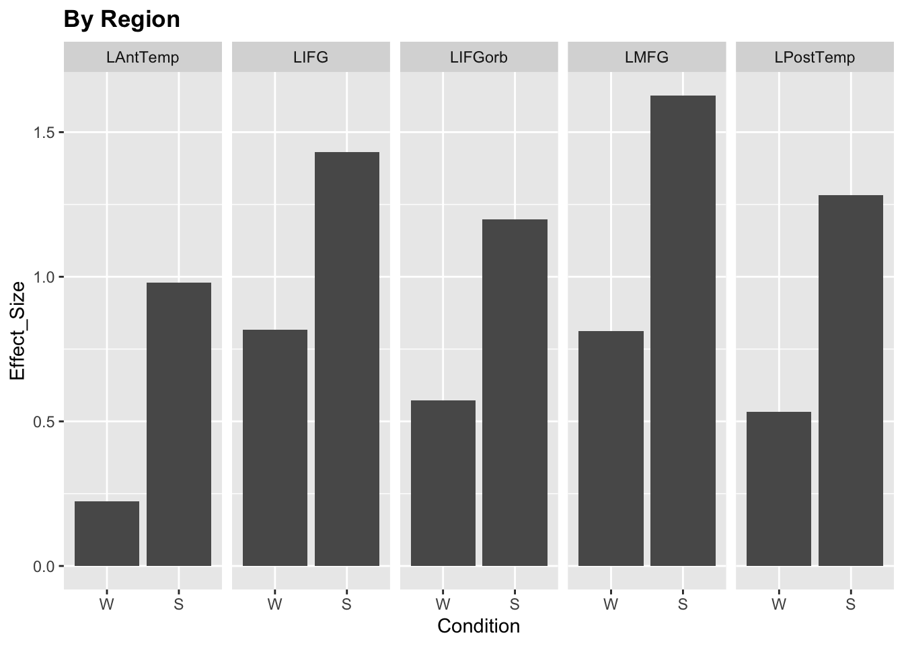

5 Meta Decisions
Now that we’ve covered the foundations of how to build mixed effect models and how to interpret their results, we would like to cover some of the more conceptual questions.
We are entering the uncertain terrain where, for many questions, instead of yes or no, we’ll have to say “it depends”. But this is what modeling and statistics is all about - making certain assumptions about how your data is structured and then building your model based on these assumptions.
5.1 Brain regions: fixed or random?
So far, we have made it seem obvious whether a variable should be entered as a fixed effect or a random effect. For Condition, we had 2 levels and wanted to examine each one - hence our decision to include it as a fixed effect. For Participant, we had many levels and only wanted to estimate general variance - thus it became a random variable. But what if the case is more borderline?
For instance, what about brain regions? Do we care about each brain region individually or do we want to estimate general variability across regions? In our models so far, we estimated the effect of condition on activity in the MD network. Since we treated the network as its own entity, we were content with evaluating the overall effect of condition; region was entered as a random effect to “absorb” additional variance. Plus, we had 20 different regions, so we weren’t necessarily keen on having 19 region effects to report (we chose to estimate the effect of hemisphere instead).
Let’s take a look at the other half of the dataset - the language network responses (left hemisphere only).
data = read.csv('data/Diachek2020.csv', header=TRUE)
data.lang = subset(data, (System=="language"))
data.lang = subset(data.lang, (Hemisphere=="L"))
data.lang$Condition = factor(data.lang$Condition, levels=c('W', 'S'))
# plot
ggplot(data.lang)+
stat_summary(aes(x=Condition, y=Effect_Size), fun.y="mean", geom="col")+
facet_wrap(~Region, ncol = 5)+
labs(title="By Region")+
theme(legend.position = "none",
plot.title=element_text(face="bold"))
Should we model each region as a fixed effect or a random effect?
Five regions is pretty low for a random effect but we could probably pull it off. The real question is: do we want to treat each region as an independent entity, which will be estimated independently from the rest, or do we want to treat them as part of the overall brain region population, in which case the model will estimate a joint variance parameter for all of them?
The answer is: it depends on your assumptions and goals as a researchers. Are you interested in reporting the overall effect across all these regions? Do you think that they come from the same population? Or do you think that your regions of interest in anterior and posterior temporal lobes behave independently from each other?
Below, we will try to model brain region both ways and see what can come out of it.
5.1.1 As a fixed effect
Since we do not have an obvious region that would serve as the baseline, we will set the intercept to 0.
m.fixedreg = lmer(Effect_Size ~ 0 + Region + Condition + (1 |SubjectID) + (1 |Experiment),
data = data.lang, REML=FALSE)
coef(summary(m.fixedreg)) # fixed## Estimate Std. Error df t value Pr(>|t|)
## RegionLAntTemp 0.3110634 0.07208085 51.73055 4.315478 7.199986e-05
## RegionLIFG 0.7948357 0.07208085 51.73055 11.027002 3.422351e-15
## RegionLIFGorb 0.5588573 0.07208085 51.73055 7.753200 3.234654e-10
## RegionLMFG 0.9460898 0.07208085 51.73055 13.125396 4.305164e-18
## RegionLPostTemp 0.6154249 0.07208085 51.73055 8.537981 1.891258e-11
## ConditionS 0.4349757 0.03566706 3611.53937 12.195445 1.488782e-33## Groups Name Std.Dev.
## SubjectID (Intercept) 0.51782
## Experiment (Intercept) 0.32869
## Residual 0.62866We get the estimate for each of the five regions; these estimates are evaluated at the baseline level of condition, which is words. The last fixed effect, ConditionS, here estimates the magnitude of the Sentences>Words contrast at the baseline level for region (which happens to be LAntTemp: we didn’t specify it, so R just picked the first region alphabetically)s. So we have 5 regions’ responses to words and one region’s response to sentences>words. Not very useful.
You can improve the interpretation of these effects by changing the contrasts (see section 4.2). You would also probably want to include the condition x region interaction term to estimate the sentences>words response in all regions. For now, let’s just estimate the main effects with ls_means:
## Least Squares Means table:
##
## Estimate Std. Error df t value lower upper
## RegionLAntTemp 0.528551 0.067984 41.5 7.7746 0.391305 0.665798
## RegionLIFG 1.012324 0.067984 41.5 14.8906 0.875077 1.149570
## RegionLIFGorb 0.776345 0.067984 41.5 11.4195 0.639098 0.913592
## RegionLMFG 1.163578 0.067984 41.5 17.1154 1.026331 1.300824
## RegionLPostTemp 0.832913 0.067984 41.5 12.2516 0.695666 0.970159
## ConditionW 0.645254 0.069975 46.0 9.2212 0.504397 0.786111
## ConditionS 1.080230 0.066219 37.3 16.3129 0.946090 1.214370
## Pr(>|t|)
## RegionLAntTemp 1.254e-09 ***
## RegionLIFG < 2.2e-16 ***
## RegionLIFGorb 2.186e-14 ***
## RegionLMFG < 2.2e-16 ***
## RegionLPostTemp 2.267e-15 ***
## ConditionW 5.077e-12 ***
## ConditionS < 2.2e-16 ***
## ---
## Signif. codes: 0 '***' 0.001 '**' 0.01 '*' 0.05 '.' 0.1 ' ' 1
##
## Confidence level: 95%
## Degrees of freedom method: SatterthwaiteOk, this is better. We get the main effect of each region (averaged across conditions) and the main effect of each condiion (averaged across regions). Had we included an interaction, we would also have estimates for region-specific differences in word and sentence responses. This seems sufficient to describe our results.
The important thing is that we get a separate estimate for each ROI. If the average responses in 4 ROIs were 0.1-0.2 and the response in LIFG was 2.5, the model would just fit the corresponding coefficients. There is no assumption that activity levels across different ROIs need to be comparable.
On the other hand, our ability to estimate whole-network effects is somewhat limited. For instance, we don’t have the sentences>words estimate for the entire network. We can specify it in follow-up tests but it might be a bit cumbersome. The value of this approach is the focus on individual regions, not so much the network as a whole.
5.1.2 As a random effect
Ok, but what if we mostly care about the network-level responses? Then we can treat ROI as a random effect. If we decide to evaluate the responses in individual ROIs, we can always run follow-up tests.
(see how I switched the optimizer here to make the model converge?)
m.randomreg = lmer(Effect_Size ~ 1 + Condition + (1 |SubjectID) + (1 |Experiment) + (1 |Region),
data = data.lang, REML=FALSE,
control = lmerControl(optimizer = "bobyqa", optCtrl=list(maxfun=2e5)))
coef(summary(m.randomreg)) # fixed## Estimate Std. Error df t value Pr(>|t|)
## (Intercept) 0.6452897 0.12174795 10.61769 5.30021 2.841796e-04
## ConditionS 0.4349022 0.03570038 3624.26797 12.18200 1.735365e-33## Groups Name Std.Dev.
## SubjectID (Intercept) 0.51781
## Experiment (Intercept) 0.33253
## Region (Intercept) 0.22181
## Residual 0.62893This should look familiar - we’ve run versions of this model a lot using the MD data. The intercept is the effect of word reading across all regions, ConditionS is the sentence>words response across all regions, and Regions (Intercept) is the standard deviation of each region’s mean response from the grand mean.
This model is designed for making statements like “the language network responds to X”. If we want to see whether there is significant variation in the mean response across ROIs, we can run the likelihood ratio test:
m.randomreg.null = lmer(Effect_Size ~ 1 + Condition + (1 |SubjectID) + (1 |Experiment),
data = data.lang, REML=FALSE,
control = lmerControl(optimizer = "bobyqa", optCtrl=list(maxfun=2e5)))
anova(m.randomreg, m.randomreg.null)## Data: data.lang
## Models:
## m.randomreg.null: Effect_Size ~ 1 + Condition + (1 | SubjectID) + (1 | Experiment)
## m.randomreg: Effect_Size ~ 1 + Condition + (1 | SubjectID) + (1 | Experiment) +
## m.randomreg: (1 | Region)
## Df AIC BIC logLik deviance Chisq Chi Df Pr(>Chisq)
## m.randomreg.null 5 11951 11984 -5970.5 11941
## m.randomreg 6 11394 11434 -5691.2 11382 558.53 1 < 2.2e-16
##
## m.randomreg.null
## m.randomreg ***
## ---
## Signif. codes: 0 '***' 0.001 '**' 0.01 '*' 0.05 '.' 0.1 ' ' 1Reporting: > The random intercept by ROI explained a significant amount of variance (\(\sigma\)=0.22, likelihood ratio test \(X^2\)=558.5, p<.001).
To estimate the sentences>words effect in individual regions, you can run a follow-up test on the data from a single region:
data.lang.IFG = subset(data.lang, (Region=="LIFG"))
m.randomreg.IFG = lmer(Effect_Size ~ 1 + Condition + (1 |SubjectID) + (1 |Experiment),
data = data.lang.IFG, REML=FALSE)
coef(summary(m.randomreg)) # fixed## Estimate Std. Error df t value Pr(>|t|)
## (Intercept) 0.6452897 0.12174795 10.61769 5.30021 2.841796e-04
## ConditionS 0.4349022 0.03570038 3624.26797 12.18200 1.735365e-33## Groups Name Std.Dev.
## SubjectID (Intercept) 0.51781
## Experiment (Intercept) 0.33253
## Region (Intercept) 0.22181
## Residual 0.62893Now we have the words effect and the sentences>words effect specifically for IFG. (When performing the follow-up tests for all regions, don’t forget to correct for multiple comparisons).
5.1.3 Beyond brain region
In general, for every predictor you enter into the model, you should consider whether it makes more sense to make it a fixed or a random effect. How many levels does it have? Are those levels independent or do they come from the same distribution? Are we interested in estimating each level separately or in getting an overall variance estimate? Sometimes the answers will all point in the same direction and sometimes they won’t. The important thing is to make a principled decision and to be able to justify it.
5.2 Model complexity
A big question when deciding on the model structure is: how complex should it be? Should we only include the terms we care about? The terms that we know contribute to the variance? Any terms that might potentially affect the result?
Statisticians differ in their opinions on this topic. A famous paper by Barr et al. (2013) argues that we should “keep it maximal”: models that are overly conservative in their random effects structure generalize more poorly. Their recommendation is therefore to include the maximum number of terms justified by the design.
In practice, of course, you may quickly run into convergence issues or risk overfitting your model. A reasonable middle ground is to start with a maximal model and then iteratively simplify it (see section 4.3.4). However, this means that we have to sacrifice potentially important model terms due to the practical limitations of our dataset. Ideally, we would estimate the ideal model structure in advance and design the experiment with it in mind.
The fMRI community has only recently begun applying mixed effect models in our work. Hopefully, in a few years the community will have established the optimal model structure for our specific use cases and validated it across a range of experiments.
5.3 Single-subject mixed analyses?
All the analyses we describe here are conducted at the group level. The Effect_Size variable consists of beta values for individual subjects obtained with a classical general linear model (for a video refresher on the GLM, check out this video tutorial). However, given how powerful mixed effect models are, don’t we want to incorporate them into subject-level analyses too? For instance, we could model variation across items and/or across experimental runs.
The answer is: yes, in theory this would be great. Our group doesn’t do that yet, but we might eventually - stay tuned! Although the potential utility of mixed effect models at the single subject levels depends quite a lot on the specifics of your experimental design.
If we do decide to introduce mixed effect modeling at the single subject level, the next question becomes: do we want to keep the two-stage processing pipeline (subject-level and then group-level) or do we want to throw in all the effects in one big model?
Koh et al (2018) describe a relatively straightforward way of joint subject- and group-level timeseries modeling with mixed effect models. The only issue is that these models become computationally expensive really quickly and might have trouble scaling.
The two-stage model is computationally much more feasible (which is why it is almost universally used in fMRI analyses today). It is also more flexible - single subject estimates can potentially be used for many different group models. However, Jeanette Mumford in her 2020 video points out a few downsides of breaking down this process into two stages, such as inaccuracies due to ignoring within-subject variance. Thus, this debate is also far from settled.
5.4 Conclusion
All in all, this is an exciting time. The mixed effects modeling approach has conquered many fields and is now making steady advances in neuroimaging. Many practices remain to be developed, ratified and accepted by the community, but we can already use mixed effect models to account for previously ignored structure in our data. Hopefully this tutorial provided a helpful introduction to the topic!